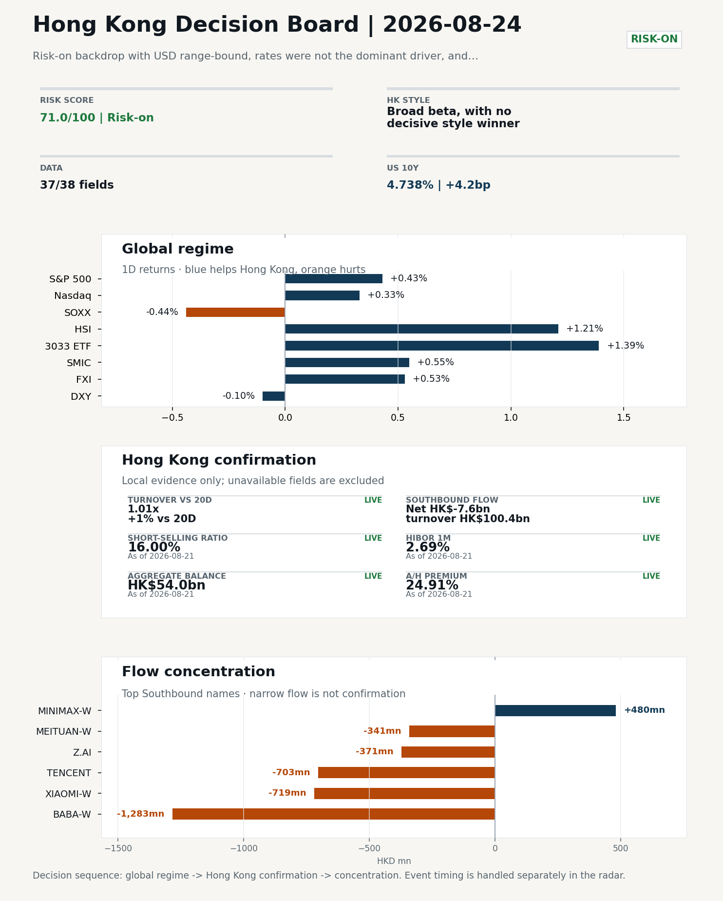
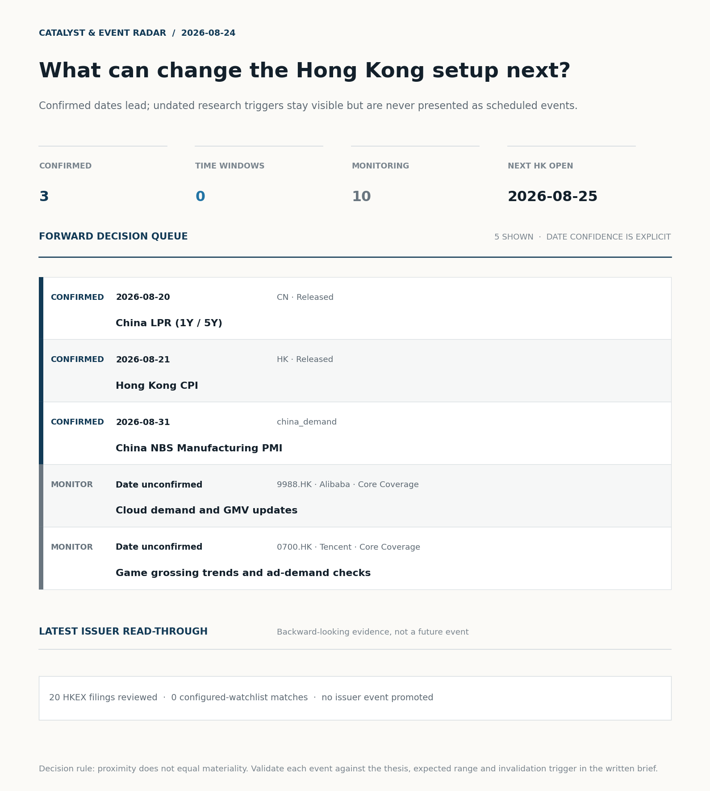
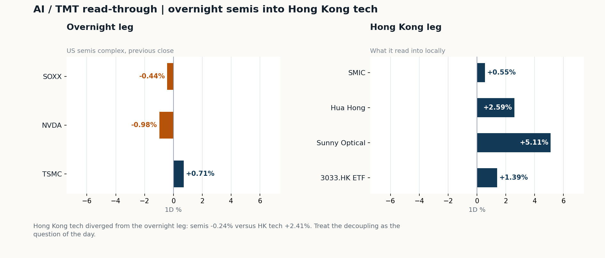
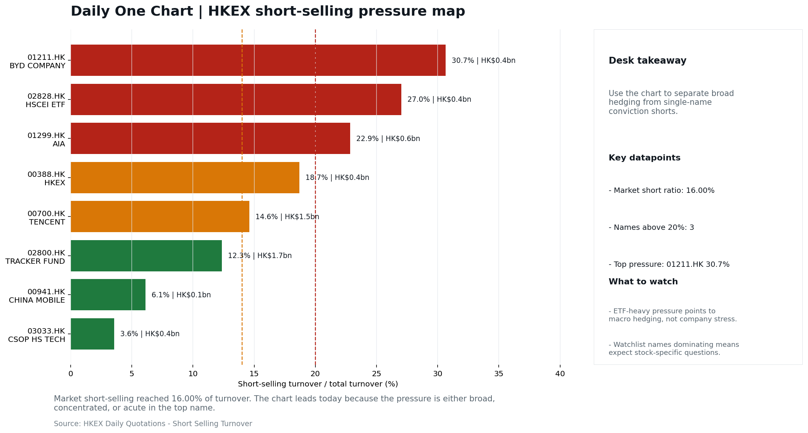
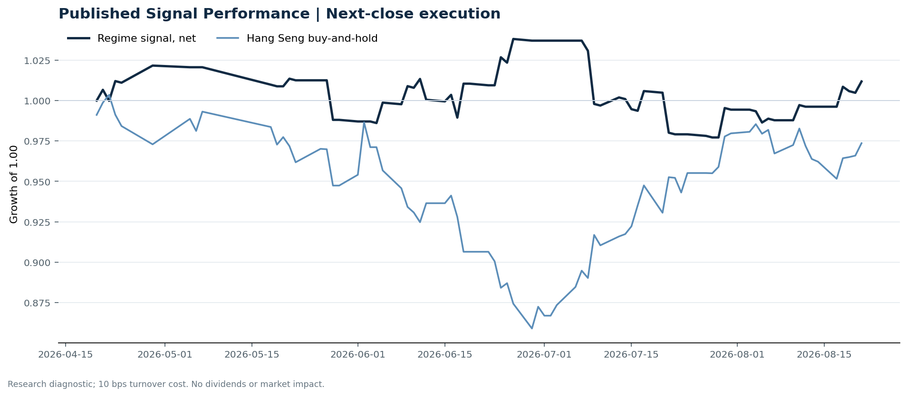

In this issue
Morning Research Workbench | 2026-08-24
Executive Summary
- Did yesterday's call work? UNRESOLVED - No comparable next close is available yet, so the call is still open.
- What changed overnight? Semis led lower: SOXX -0.44%, NVDA -0.98%, TSMC +0.71%. HSI +1.21% and 3033.HK +1.39%.
- What it means for AI/TMT No decisive style winner - Broad beta, with no decisive style winner, a 0.38pp spread. Hong Kong tech diverged from the overnight leg: semis -0.24% versus HK tech +2.41%. Treat the decoupling as the question of the day.
- What to watch today Watch whether SMIC and Hua Hong trade with HSCEI rather than with the overnight semis leg.
Visual Dashboard

Catalyst & Event Radar

Chart read: 3 dated event(s) lead the queue; 10 undated trigger(s) remain explicitly in monitoring.
Source: Public calendars, issuer disclosures and configured research watchlists
Layer 1 | Reset (5 min)
1.1 Last Session's Call
Verdict: UNRESOLVED. No comparable next close is available yet, so the call is still open.
Recent record. 5 confirmed / 5 broken over the last 10 scoreable calls (50.0% hit rate). This is a directional close-to-close diagnostic, not a track record.
1.2 Global Asset Price Dashboard
Decision-useful subset: each row states the implication and the next test. Descriptive secondary monitors are kept out of the five-minute scan.
| Signal | Last / move | Interpretation | Confirmation / invalidation |
|---|---|---|---|
| S&P 500 | 7,674.37 / +0.43% | Broad US risk rose as volatility drained out of the tape, which sets the external floor Hong Kong opens against. Falling volatility confirms lower near-term stress. | Watch whether Nasdaq and offshore-China proxies move the same way. |
| Nasdaq 100 | 29,308.86 / +0.33% | Growth tracked broad beta, so the move looks market-wide rather than duration-led. Growth advanced despite higher yields, showing momentum resilience but also higher reversal sensitivity. | 3033.HK versus HSI leadership carries the read; rising yields would undo it. |
| Hang Seng Index | 26,009.46 / +1.21% | Broad beta rose with no single driver visible in today's fields. | Southbound participation decides whether this is investable or just a print. |
| Hang Seng TECH ETF (3033.HK) | 4.6700 / +1.39% | Hong Kong growth led broad beta, improving the platform/internet style signal. | Needs a stable CNH and Southbound buying to become a duration signal. |
| Semiconductors (SOXX) | 520.05 / -0.44% | Semis underperformed the Nasdaq by 0.77pp, so this is a cycle move rather than broad growth weakness. | SMIC and Hua Hong at the open show whether it transmits to Hong Kong. |
| SMIC (0981.HK) | 72.50 / +0.55% | The local expression of the overnight semis move; compare it with SOXX to separate the global cycle from single-name news. | A move far larger than SOXX points to company-specific news, not the cycle. |
| US 10Y | 4.7380% / +4.2bp | The yield proxy rose, tightening the discount-rate backdrop for long-duration Hong Kong growth. | Read it through 3033.HK relative performance, not the index level. |
| China 10Y | 1.68% / +0.1bp | Higher local yields may indicate firmer growth or tighter financial conditions; price action alone cannot distinguish them. | Use CSI 300, copper and official credit/activity data to separate growth optimism from demand weakness. |
| DXY | 98.80 / -0.10% | A softer dollar eases an external-liquidity headwind for Hong Kong risk assets. | Only meaningful if USD/CNH moves the same way; divergence cancels it. |
| USD/CNH | 6.7115 / -0.07% | A stronger offshore renminbi supports the external-risk backdrop for Hong Kong equities. | FXI and Southbound flow decide whether this reaches Hong Kong equities. |
| VIX | 15.13 / -5.50% | Lower implied volatility reduces near-term stress, but is supportive only if equity breadth confirms. | Falling volatility on narrowing breadth is a warning, not support. |
Secondary monitors retained in the source bundle: CSI 300, CN-US 10Y spread, USD/HKD, Brent crude, COMEX gold, Copper.
1.3 Hong Kong Baseline Quick Check (Friday Close)
| Check | Value | Status | Source / as of | Why it matters |
|---|---|---|---|---|
| Main Board turnover vs 20D | 1.01x | +1% vs 20D | Live local | HKEX | 2026-08-21 | Trailing 20-session average turnover was HK$254.8bn. |
| Southbound / Northbound net flow | Southbound Net HK$-7.6bn | turnover HK$100.4bn | Northbound Turnover RMB268.1bn | net not reported | Live local | HKEX Connect | 2026-08-21 | Southbound net buy is calculated from HKEX disclosed buy and sell turnover. |
| Short-selling ratio | 16.00% | Live local | HKEX | 2026-08-21 | Official HKEX stock-level short-selling table, aggregated as a share of total market turnover. |
| AH premium index | 24.91% | Live public | Yahoo | 2026-08-21 | Fixed 10-name basket, equal-weighted, both legs priced on the same date; comparable across dates. Covered-pair average was +31.26% across 17 pairs. |
| USD/HKD spot vs band | 7.8435 | band 7.7500 to 7.8500 | Live quote + local | Yahoo | 2026-08-21 | 65 pips from the weak-side CU (7.8500); monitor HKMA operations and the aggregate balance for a funding squeeze. Official Convertibility Undertakings define the linked-rate stress boundaries for USD/HKD. |
| HIBOR 1M | 2.69% | Live local | HKMA | 2026-08-21 | 1M HIBOR is the cleanest quick read for Hong Kong funding conditions and equity-duration pressure. |
| Hong Kong leadership | Broad beta, with no decisive style winner | Proxy | HSI / HSCEI / 3033.HK ETF relative | 2026-08-21 | Use HSI / HSCEI / 3033.HK ETF relative moves as the opening style read. |
1.4 Decision Board
Composite risk score: 71.0/100 | Regime: Risk-on
| Component | Score impact | Evidence |
|---|---|---|
| US beta | +2.6 | S&P 500 +0.43% |
| HK growth ETF proxy | +6.9 | 3033.HK ETF +1.39% |
| Semis complex | -2.2 | SOXX -0.44% |
| Offshore China proxy | +2.7 | FXI +0.53% |
| Dollar pressure | +1.0 | DXY -0.10% |
| Volatility | +10 | VIX -5.50% |
| HK short-selling | +0 | Short-selling ratio 16.00% |
| HK turnover | +0 | Turnover 1.01x 20D |
Base 50 plus the component deltas above. Semis complex entered the score on 2026-08-22; earlier scores in the ledger exclude it.
This Week Checklist
- [A] Alibaba plunges after announcing $10.2 billion share placement to fund AI push News / announcements | Capital allocation or shareholder-return events can trigger a valuation reset
- Risk-on backdrop with USD range-bound, rates were not the dominant driver, and 3033.HK outperformed FXI Still-moving markets | No fresh Hong Kong cash session is assumed; use global active assets and policy/event flow to prepare the next open.
- China LPR (1Y / 5Y) (Released) Macro / policy | Watch whether it changes the day's core market narrative | Industries: Market-wide
- [A] Chinese Builder Logan Wins Court Approval for Debt Restructuring News / announcements | Policy and regulation can reshape the Property and Construction industry logic
Layer 2 | Deep Read (20-30 min)
2.1 Weekend Digest and Global Baseline
Week-ahead mode: use Friday's close as the baseline, lay out the week's calendar, and name the key things to watch rather than replaying stale cash-market tape.
Market Setup Core tape. Overseas risk assets closed Friday mostly firmer - S&P 500 +0.43%, Nasdaq 100 +0.33%, Euro Stoxx 50 +0.63% - in a risk-on tape where USD was range-bound and rates were not the dominant driver. Main driver. The AI/semiconductor complex was mixed, with SOXX -0.44% and NVDA -0.98% against TSMC +0.71%, leaving Nvidia's upcoming earnings as the key event. HK relevance. Weekend corporate-action headlines dominate China flow: Alibaba's $10.2bn placement and YMTC fundraising create supply/dilution overhang, while Logan's court-approved restructuring is a developer-specific positive.
Key Drivers
- US and European equities advanced in a risk-on backdrop.
- AI/semis diverged: SOXX -0.44% and NVDA -0.98% versus TSMC +0.71%, with Nvidia's Wednesday earnings seen as a short-term reset for AI supply-chain valuations.
- Alibaba announced a $10.2bn share placement to fund AI; combined with YMTC fundraising, this creates China tech dilution/supply overhang.
- Logan's Hong Kong court approval for debt restructuring offers a concrete positive precedent for China property credit workouts.
Hong Kong Read-Through Opening implication. Hong Kong is closed until 25 August; Friday's tape - HSI +1.21%, HSCEI +1.01%, 3033.HK +1.39%, FXI +0.53% - is reference-only. For the reopen, the US/Europe risk-on tone is supportive. Hong Kong style leadership and flow confirmation are set out in the Hong Kong review below.
Watch Points
- USD composite moved lower by -0.03pct intraday, with a 0.214pct range.
- Main turning points appeared around 2026-08-21 08:05 peak / 2026-08-21 08:45 peak / 2026-08-21 09:30 trough, suggesting event-driven repricing rather than a clean one-way USD move.
- The biggest cross-asset divergence was 3033.HK versus FXI, a spread of 1.342pct.
- Gold moved +1.87pct intraday with a 2.224pct high-low range.
Week Ahead Map
- Week ahead (2026-08-24 to 2026-08-28) opens against a
Risk-onbackdrop, using Friday's close (2026-08-21) as the baseline.
This Week's Calendar
| Day | Dated catalysts |
|---|---|
| 2026-08-24 Mon | No dated catalyst |
| 2026-08-25 Tue | No dated catalyst |
| 2026-08-26 Wed | No dated catalyst |
| 2026-08-27 Thu | No dated catalyst |
| 2026-08-28 Fri | No dated catalyst |
Base Case / Risk Case
- Base case: Risk-on continuation: leadership stays with growth / platform names and the 3033.HK ETF proxy, supported by flows.
- Risk case: A hawkish macro surprise or a sharp USD/CNH leg higher unwinds the risk-on bias and rotates into defensives.
What to Watch This Week
- Open versus Friday's close (2026-08-21): whether the gap holds or fades is the first signal of the week.
- Southbound flow: confirm the index move with local money rather than offshore beta.
- HSI vs 3033.HK ETF leadership: growth-led or value-led decides the week's style.
- USD/CNH and USD/HKD: FX stability is the precondition for a clean risk-on extension.
- Turnover vs 20-day: thin participation makes any index move easier to fade.
- First dated catalyst: 2026-08-31 | China NBS Manufacturing PMI - the cleanest early test of the base case.
Weekend Digest
| Channel | Signal | Why |
|---|---|---|
| Weekend news | Alibaba plunges after announcing $10.2 billion share placement to fund | Capital allocation or shareholder-return events can trigger a valuation reset |
| Weekend news | Chinese Builder Logan Wins Court Approval for Debt Restructuring | Policy and regulation can reshape the Property and Construction industry logic |
| Weekend news | Nvidia is the beating heart of the AI boom and the stock market - which | This can directly reshape earnings forecasts and the valuation framework |
| Vol | VIX -5.50% | Lower volatility signals easing stress in the tape. |
| Crypto | Bitcoin +7.26% | A strong crypto tape reinforces the risk-on read. |
| Commodities | Copper +1.85% | Keep tracking it to confirm whether the core daily narrative is holding. |
| Commodities | Gold +2.39% | A firm gold price suggests hedge demand or lower real yields. |
Monday Morning Questions
- Which single dated catalyst this week is most likely to change the base case?
- Does Southbound flow confirm or contradict the overnight cross-asset tone?
- Is the week likely to be beta-led or driven by a narrow style pocket?
- What data point would invalidate the base case by mid-week?
Curated overnight stories
- Alibaba plunges after announcing $10.2 billion share placement to fund AI push Why it matters: A $10.2bn placement creates dilution and supply overhang for the largest China Internet name, and reframes AI investment as increasingly equity-funded. HK read-through: Direct gap risk for Alibaba HK and HSTECH; pressure likely extends to China Internet leaders and AI-capex names at the next open.
- Chinese Builder Logan Wins Court Approval for Debt Restructuring Why it matters: Hong Kong court approval provides a concrete restructuring precedent for a defaulted Chinese developer, a positive signal for China property credit workout credibility. HK read-through: Supports distressed China property and credit-sensitive Hong Kong/offshore names; treat as medium-term positive but likely developer-specific.
- Nvidia is the beating heart of the AI boom and the stock market - which sets up a big test Why it matters: Nvidia's Wednesday earnings is a short-term catalyst that can reset AI earnings and valuation assumptions across global and Asian supply chains. HK read-through: Key for Hong Kong/A-share semiconductor and AI hardware names; risk tone into the report may dominate tech trading at the next open.
- Alibaba, YMTC Fundraising Hits China Tech Stocks on Supply Woes Why it matters: Combines Alibaba's placement with YMTC fundraising to show supply/dilution concerns spreading across the China tech complex. HK read-through: Broadens the China tech supply overhang beyond Alibaba; monitor whether selling pressure propagates through internet and semiconductor value chains.
- China LPR (1Y / 5Y) (Released) Why it matters: Policy rate signal for property mortgages and corporate credit; actual rate detail was not supplied in the event feed. HK read-through: If the 5Y LPR moved, it would directly affect China property and credit-sensitive Hong Kong/offshore China positioning; otherwise treat as event watch.
2.2 Hong Kong / A-share Last Close Baseline
Local Tape Setup Local read. Hong Kong and A-share follow-through should be judged through style leadership, not index direction alone. Verification point. Friday's reference tape is risk-on and growth-tilted: 3033.HK +1.39% versus HSCEI +1.01% and FXI +0.53%, while SOXX -0.44% and NVDA -0.98% leave AI/semis leadership mixed. Risk to watch. For the 25 August reopen, the live catalysts are Alibaba's $10.2bn placement/dilution overhang and Nvidia's earnings, so the setup is selective growth rather than broad beta.
Style and Local Leadership Style call. Broad beta, with no decisive style winner.
- Evidence: 3033.HK and HSCEI were separated by only 0.38pp (+1.39% versus +1.01%)
- Portfolio meaning: Avoid forcing a growth-versus-value call; let volume, Southbound concentration, and the first-hour relative tape identify leadership.
- Cross-market read: Hang Seng +1.21% / HSCEI +1.01% / 3033.HK ETF +1.39%. Offshore China proxy FXI +0.53% and USD/CNH -0.07% frame cross-border risk appetite. USD/HKD last traded around 7.8435, which keeps the Hong Kong funding lens in focus.
Flow Confirmation Official Stock Connect evidence is available; the Flow Tracker confirms whether local money supports the price action.
Follow-Through Checklist Follow-through check. At the 25 August open, watch whether 3033.HK outperforms HSCEI with Main Board turnover near or above 1.0x the 20-session average and Southbound net selling does not deepen. If Alibaba-related supply drags HSTECH lower, treat the tape as placement-driven and wait for Nvidia earnings before adding growth beta. Failure condition. Reclassify the tape when either 3033.HK or HSCEI opens a sustained 0.5pp relative lead with flow confirmation.
2.3 AI / TMT Read-Through

Overnight leg. The overnight semis leg was flat (-0.24% average), so it does not set the direction for Hong Kong tech today. Hong Kong expression. Let local flow and style leadership drive the tech read rather than the overnight tape. Observable test. Watch whether SMIC and Hua Hong trade with HSCEI rather than with the overnight semis leg.
| Name | Role in the chain | 1D | Leg |
|---|---|---|---|
| SOXX | Semis complex | -0.44% | overnight |
| NVDA | AI capex narrative | -0.98% | overnight |
| TSMC | Foundry demand | +0.71% | overnight |
| SMIC | Leading-edge / domestic substitution | +0.55% | Hong Kong |
| Hua Hong | Mature-node pricing cycle | +2.59% | Hong Kong |
| Sunny Optical | Hardware and optics supply chain | +5.11% | Hong Kong |
| 3033.HK ETF | Broad HK tech beta | +1.39% | Hong Kong |
Read with care. Hong Kong tech diverged from the overnight leg: semis -0.24% versus HK tech +2.41%. Treat the decoupling as the question of the day.
2.4 Flow Tracker and Attribution
Cross-Asset Attribution
- Cross-asset attribution did not surface a dominant driver set for this run.
Local Flow Tracker
Flow Takeaways
- Local flow evidence is not yet strong enough to override the cross-asset setup.
- Stock Connect Southbound: net HK$-7.6bn on turnover HK$100.4bn (as of 2026-08-21).
- Stock Connect Northbound: turnover RMB268.1bn; public file provides total turnover/top active names, not full net-buy.
- AH premium: fixed 10-name basket +24.91% (comparable across dates); covered-pair average +31.26% over 17 pairs; widest premium: China Communications Construction 86.78%.
Stock Connect Southbound Active Names
| # | Ticker | Name | Buy | Sell | Net buy | HKEX turnover rank |
|---|---|---|---|---|---|---|
| 1 | 09988.HK | BABA-W | HK$3,220.5mn | HK$4,503.9mn | HK$-1,283.5mn | 1 |
| 2 | 01810.HK | XIAOMI-W | HK$968.3mn | HK$1,687.0mn | HK$-718.7mn | 7 |
| 3 | 00700.HK | TENCENT | HK$1,445.4mn | HK$2,148.5mn | HK$-703.0mn | 4 |
| 4 | 00100.HK | MINIMAX-W | HK$2,265.2mn | HK$1,785.2mn | HK$480.0mn | 4 |
| 5 | 02513.HK | Z.AI | HK$3,519.4mn | HK$3,890.8mn | HK$-371.5mn | 1 |
AH Premium Dispersion
| Name | A ticker | H ticker | Premium | As of |
|---|---|---|---|---|
| China Communications Construction | 601800.SS | 1800.HK | +86.78% | 2026-08-21 |
| China Railway Construction | 601186.SS | 1186.HK | +56.06% | 2026-08-21 |
| China Life | 601628.SS | 2628.HK | +53.95% | 2026-08-21 |
| China Railway | 601390.SS | 0390.HK | +48.63% | 2026-08-21 |
| Sinopec | 600028.SS | 0386.HK | +35.06% | 2026-08-21 |
HKEX Short-Selling Watch
| Ticker | Name | Short ratio | Short turnover | Total turnover |
|---|---|---|---|---|
| 00388.HK | HKEX | 18.69% | HK$0.4bn | HK$2.2bn |
| 00700.HK | TENCENT | 14.60% | HK$1.5bn | HK$10.1bn |
| 00941.HK | CHINA MOBILE | 6.12% | HK$0.1bn | HK$1.4bn |
| 01211.HK | BYD COMPANY | 30.66% | HK$0.4bn | HK$1.3bn |
| 01299.HK | AIA | 22.85% | HK$0.6bn | HK$2.8bn |
- Short-value leaders: 09988.HK BABA-W (HK$4.5bn); 07709.HK XL2CSOPHYNIX (HK$2.1bn); 02800.HK TRACKER FUND (HK$1.7bn); 09992.HK POP MART (HK$1.7bn).
2.5 Macro and Policy Tracking
Desk read. The supplied macro calendar contains no upcoming scheduled events; the only policy/data items are China LPR and Hong Kong CPI, both released and broadly inline.
Market sensitivity. They are therefore reference, not fresh catalysts.
HK implication. The still-moving signals are risk-on - VIX lower, Bitcoin and copper higher - while NVDA's modest decline is a direct watch for HK tech into 2026-08-25.
Macro watchpoints
- Whether the lower VIX / stronger Bitcoin and copper tape carries into the next Hong Kong open.
- NVDA follow-through as a direct read-through to HK tech and 3033.HK/FXI relative performance.
- Any shift in the USD range-bound backdrop or rate repricing that could alter risk appetite.
- Any fresh policy, regulatory, or geopolitical signal; no event watch is supplied.
| Time | Region | Event | Status | Desk read |
|---|---|---|---|---|
| CN | China LPR (1Y / 5Y) | Released | Impact: Watch whether it changes the day's core market narrative | Attention: 5/5 | Industries: Market-wide | |
| HK | Hong Kong CPI | Released | Impact: Local funding conditions, retail purchasing power, and HKD real rates | Attention: 1/5 | Industries: Property, Retail, Banks |
Positioning and Risk Backdrop
- Detailed local flow evidence is covered under Flow Tracker and Attribution; keep this section focused on options, hedging, and macro-positioning risk.
2.6 Company Catalysts and Risk Monitor
| Grade | Sector | Headline | Why it matters | Horizon |
|---|---|---|---|---|
| A | China Internet | Alibaba plunges after announcing $10.2 billion share placement to | Capital allocation or shareholder-return events can trigger a valuation | Medium-term trend |
| A | Property and Construction | Chinese Builder Logan Wins Court Approval for Debt Restructuring | Policy and regulation can reshape the Property and Construction industry | Medium-term trend |
| A | Semiconductors and AI | Nvidia is the beating heart of the AI boom and the stock market - | This can directly reshape earnings forecasts and the valuation framework | Short-term catalyst |
| B | China Internet | Alibaba, YMTC Fundraising Hits China Tech Stocks on Supply Woes | Assess whether the story can propagate through the China Internet value | Monitor |
| B | China Internet | Stocks making the biggest moves premarket | Assess whether the story can propagate through the China Internet value | Monitor |
Company Event Takeaway Desk read. Friday's HK/China cash tape is reference-only; next HK cash session is 25 Aug. Why it matters. The main company events are: Alibaba's $10.2bn share placement to fund AI, a China Internet supply/capital-allocation event. Follow-up. Eight HKEX profit warnings were headline-only, with no magnitude parsed, so no EPS impact should be inferred yet.
LLM Quick Takes
- 9988.HK | Fact: $10.2bn share placement to fund AI; Friday reference last price 111.0, -9.76%. Investor read
- 0700.HK | Fact: Friday reference tape fell 3.76% to 439.8. Investor read: treated as China Internet peer beta
- 3033.HK | Fact: market theme states 3033.HK outperformed FXI despite a -3.73% Friday reference close. Investor read
No immediate portfolio catalyst: 20 official filings were screened and the low-signal market set stays aggregated.
20 profit warnings
Broad-market filings remain traceable in the source appendix; they are not expanded here without a watchlist, estimate or liquidity read-through.
Coverage boundary. Earnings calendar, sell-side rating changes, IPO / grey-market monitor were not decision-grade in this run; their absence is not treated as confirmation that no event exists.
2.7 Questions to Expect This Morning
Q1. The index rose but Southbound sold - is the move real?
- Evidence: HSI +1.21% against Southbound net -7.6bn HKD.
- How to answer: Treat it as unconfirmed. Price and mainland flow disagreed, so the rose was not driven by Southbound participation; it needs another session of confirmation before being read as a trend.
Q2. Did the overnight semis move explain Hong Kong tech?
- Evidence: Hong Kong tech diverged from the overnight leg: semis -0.24% versus HK tech +2.41%. Treat the decoupling as the question of the day.
- How to answer: Not on its own. Same direction is not the same as explained, so check single-name news, placements and index events before attributing the move to the global cycle.
2.8 Core Names This Week
Core coverage
| Name | Ticker | Last | 1D | Range position | Morning note |
|---|---|---|---|---|---|
| Alibaba | 9988.HK | 111.00 | -9.76% | Mid-range | Down 9.76% on the session, mid-range at 52% of its 60-session band. |
| Tencent | 0700.HK | 439.80 | -3.76% | Mid-range | Down 3.76% on the session, mid-range at 35% of its 60-session band. |
Recent headlines for Alibaba:
- Alibaba to Raise $10.20 Billion for AI Investment With Share Placement (The Wall Street Journal)
Priority follow-up
| Name | Ticker | Last | 1D | Range position | Morning note |
|---|---|---|---|---|---|
| BYD Company | 1211.HK | 91.90 | -1.34% | Top of range | Marginally lower (-1.34%), in the top quartile of its 60-session range (82%). |
| AIA | 1299.HK | 74.70 | -0.60% | Mid-range | Marginally lower (-0.60%), mid-range at 37% of its 60-session band. |
Recent headlines for BYD Company:
- Is BYD (SEHK:1211) Fully Priced After Its EV Export Lead? (Simply Wall St.)
Layer 3 | Decision Deepening (10-15 min)
3.1 Rotating Theme Deep Dive
| Field | Read |
|---|---|
| Theme | AI and Compute Chain |
| Angle for the day | Track whether global AI capex, semis, cloud, and server demand are still carrying offshore China internet and hardware sentiment. |
Theme desk read Core thesis. The week-ahead AI and compute chain view still turns on whether global AI capex, semis, cloud, and server demand can keep carrying offshore China internet and hardware sentiment. Evidence. Friday's Hong Kong tape is reference only: Alibaba closed down 9.76% to HK$111.0 and Tencent down 3.76% to HK$439.8, so these are last-available cash levels rather than a fresh session move. What to test. The more current signals are a lower VIX (-5.50%) and stronger Bitcoin (+7.26%), which support the risk-on backdrop, while Nvidia's earnings due Wednesday remain the key valuation test for the AI complex.
Signals to keep in mind
- Alibaba plunges after announcing $10.2 billion share placement to fund AI push
- Nvidia is the beating heart of the AI boom and the stock market - which sets up a big test
- VIX -5.50%: Lower volatility signals easing stress in the tape.
- Bitcoin +7.26%: A strong crypto tape reinforces the risk-on read.
LLM watch items:
- Nvidia earnings and forward commentary due Wednesday as the week's main AI demand and valuation check.
- Alibaba placement pricing, dilution overhang, and any read-through to Tencent and broader China internet supply concerns.
- Whether 9988.HK stabilizes after Friday's -9.76% reference close and whether 0700.HK follows the supply narrative at the next open.
- VIX and Bitcoin as risk-regime checks; if risk-on fades, treat any HK tech bounce with lower conviction.
Related names to keep close:
| Name | Ticker | Bucket | Morning read |
|---|---|---|---|
| Alibaba | 9988.HK | Core coverage | Down 9.76% on the session, mid-range at 52% of its 60-session band. |
| Tencent | 0700.HK | Core coverage | Down 3.76% on the session, mid-range at 35% of its 60-session band. |
| AIA | 1299.HK | Priority follow-up | Marginally lower (-0.60%), mid-range at 37% of its 60-session band. |
Relevant headlines:
- Alibaba plunges after announcing $10.2 billion share placement to fund AI push
- Nvidia is the beating heart of the AI boom and the stock market - which sets up a big test
- Alibaba, YMTC Fundraising Hits China Tech Stocks on Supply Woes
3.2 This Week Calendar and Trading Setup
- Non-trading review: use today's calendar to prepare the next Hong Kong open rather than treating the last cash tape as a fresh signal.
Same-day macro docket No same-day macro items were scheduled.
Next few sessions
| Date | Category | Event | Impact |
|---|---|---|---|
| 2026-08-31 | china_demand | China NBS Manufacturing PMI | Watch whether it changes risk budgets or the theme-trading cadence |
3.3 Daily One Chart
Daily One Chart | HKEX short-selling pressure map

Chart read. Market short-selling reached 16.00% of turnover. Why it matters. The chart leads today because the pressure is either broad, concentrated, or acute in the top name.
Source: HKEX Daily Quotations - Short Selling Turnover
Optional Appendix | Traceability and Performance (10-15 min)
Report Metadata
Date policy: Review date 2026-08-23 is treated as
Week Ahead. | Global (US/Europe) data date is 2026-08-21; adapter effective date is 2026-08-21 and summary date is 2026-08-21. | Hong Kong local data date is 2026-08-21; role: last completed HK/China cash-market reference tape. Market data quality: Coverage:37/38| Fallbacks used:2| Missing:1Report quality:95.6/100| GradeA| Statusproduction ready
Key Questions to Keep in Mind
- Is risk appetite rising or fading? The overnight tape reads closer to
Risk-On. - Did rates expectations move? Focus on whether US 10Y, DXY, and growth style moved together.
- Were commodities the real story? Watch WTI and gold for geopolitics versus inflation signals.
- Is Hong Kong setup growth-led, SOE-led, or broad beta-led? Compare the 3033.HK ETF proxy, HSCEI, and HSI.
- Did offshore markets move China risk appetite? Focus on HSI, FXI, USD/CNH, and USD/HKD.
Report Quality and Validation
- Quality score: 95.6/100 | Grade: A | Status: production ready
- Run summary: 8 healthy | 2 caveat | 0 failed
- Release recommendation: Send with caveats | The report is usable, but the advisory guidance should travel with it so readers understand the data gaps.
| Source | Status | Bucket |
|---|---|---|
| Macro calendar | partial | caveat |
| Risk and sentiment feed | partial | caveat |
Narrative fact-check guardrail
- Checked 21 numeric claims; 0 numeric mismatch(es), 0 logic warning(s); 3 structured claims, 0 source/text warning(s); 0 critical, 0 review.
Full component weights, per-source freshness, adapter status and provenance records are archived with this report under audit/ rather than printed here.
Historical Signal Performance
- Readiness: exploratory with caveats | 79 observations | 85 active signal dates | next-close entry, 10bps cost, no same-day returns.
- Interpretation boundary: exploratory until a benchmark reaches 252 sessions and 100 active-signal sessions.
| Benchmark | Sessions | Signal net | Buy & hold | Excess | Max drawdown | Hit rate |
|---|---|---|---|---|---|---|
| Hang Seng Index | 78 | 1.2% | -2.6% | 3.8% | -5.9% | 51.4% |
| Hang Seng TECH ETF (3033.HK) | 78 | 0.7% | -7.9% | 8.6% | -8.2% | 51.4% |
- Next-session diagnostic: 55.3% hit rate over 38 resolved signals; 5- and 20-session horizons are in
audit/performance_summary.json.

- Data-quality caveat: 23 conflicting historical price revision(s) and 6 weekend pseudo-session observation(s) were handled explicitly; inspect the ledger before relying on the result.
- Use boundary: this is a close-to-close research diagnostic, not an executable strategy or investment recommendation; dividends, financing, borrow and market impact are excluded.
Source Links
- Alibaba plunges after announcing $10.2 billion share placement to fund AI push (cnbc_markets)
- Chinese Builder Logan Wins Court Approval for Debt Restructuring (bloomberg_markets)
- Nvidia is the beating heart of the AI boom and the stock market - which sets up a big test (wsj_markets)
- Alibaba, YMTC Fundraising Hits China Tech Stocks on Supply Woes (bloomberg_markets)
- Stocks making the biggest moves premarket: Walmart, Coinbase, Moderna, Alibaba & more (cnbc_markets)
- Alibaba to Raise $10.20 Billion for AI Investment With Share Placement (The Wall Street Journal)
- Is BYD (SEHK:1211) Fully Priced After Its EV Export Lead? (Simply Wall St.)
- 00095.HK Profit warning / alert announcement (HKEXnews)
- 00115.HK Profit warning / alert announcement (HKEXnews)
- 00180.HK Profit warning / alert announcement (HKEXnews)
- 00265.HK Profit warning / alert announcement (HKEXnews)
- 00412.HK Profit warning / alert announcement (HKEXnews)
- 00413.HK Profit warning / alert announcement (HKEXnews)
- 00605.HK Profit warning / alert announcement (HKEXnews)
- 00661.HK Profit warning / alert announcement (HKEXnews)
Supplementary Visual Appendix
This appendix is professional-path only. It keeps a traceable index of the report visuals and the deterministic chart cues used to frame the morning note, without injecting the legacy intraday chart pack.
Visual Index
| Visual | Path | Role |
|---|---|---|
| Visual Dashboard | charts/dashboard_2026-08-24.png |
Cross-asset regime board and Hong Kong local tape snapshot. |
| Catalyst & Event Radar | charts/catalyst_radar_2026-08-24.png |
Confirmed dates, time windows, undated monitors, and recent issuer read-through. |
| Daily One Chart | charts/daily_one_chart_2026-08-24.png |
Single highest-conviction visual story for the day. |
Deterministic Chart Cues
- FX / liquidity: USD composite moved lower by -0.03pct intraday, with a 0.214pct range.
- FX / liquidity: Main turning points appeared around 2026-08-21 08:05 peak / 2026-08-21 08:45 peak / 2026-08-21 09:30 trough, suggesting event-driven repricing rather than a clean one-way USD move.
- Cross-asset: The biggest cross-asset divergence was 3033.HK versus FXI, a spread of 1.342pct.
- Cross-asset: Gold moved +1.87pct intraday with a 2.224pct high-low range.
- Cross-asset: Oil moved +0.74pct intraday with a 1.724pct high-low range.
- Cross-asset: Bitcoin moved +7.16pct intraday with a 8.388pct high-low range.